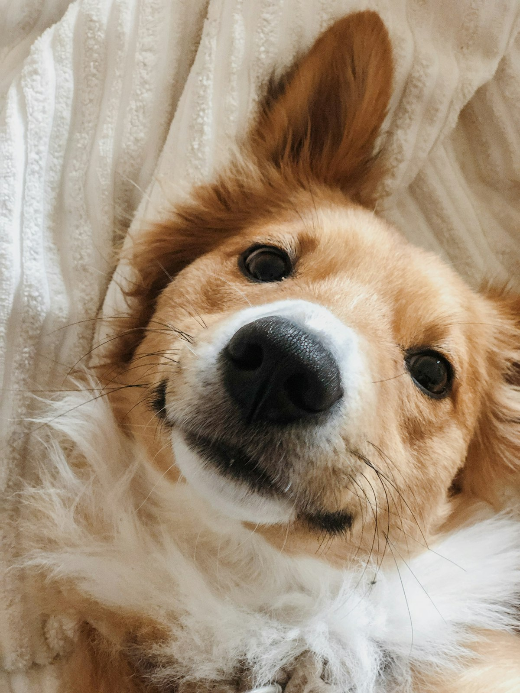
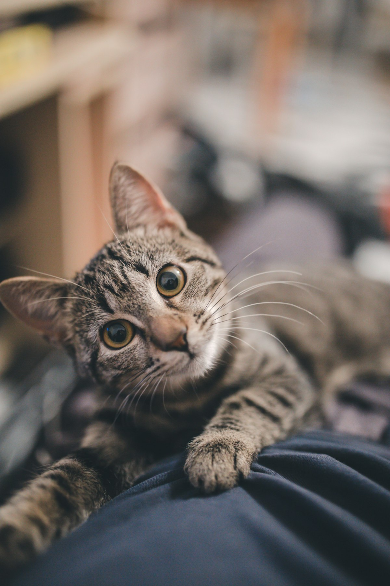
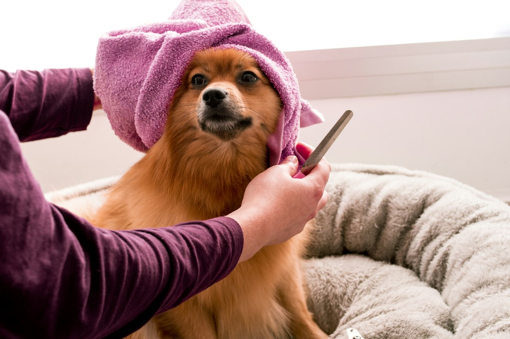
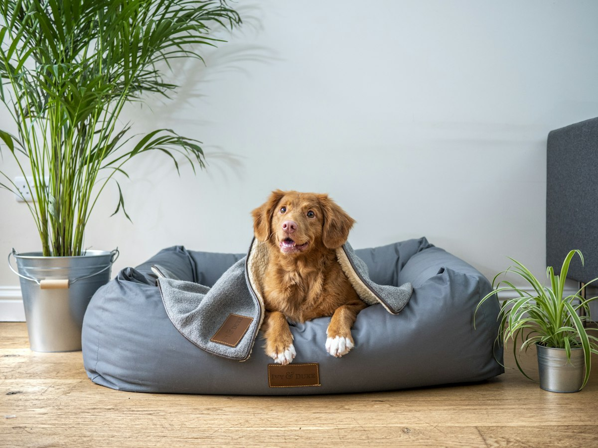

Consulta, vacunas, cirugía y hospitalización en Villa San Pablo, Chimalhuacán. Abierto todos los días de 10:00 a 18:00.
📞 Llamar 55 5017 2607💬 WhatsAppRevisión completa y diagnóstico.
Esquemas para cachorros, gatitos y adultos.
Monitoreo y cuidados para pacientes delicados.
Procedimientos con anestesia segura.
Análisis clínicos y estudios.
Baño y corte para tu peludo.
Somos un hospital veterinario de barrio con más de 800 opiniones en Google. Atendemos perros y gatos con trato cercano, precios accesibles y la confianza de las familias de Chimalhuacán.



★★★★★“Muy buena atención, explicaron todo el tratamiento de mi perrita.”
— Mariana G.
★★★★★“Atendieron a mi gato rápido y con mucho cariño.”
— Jorge R.
★★★★★“Precios accesibles y doctores pacientes. Recomendado.”
— Lupita S.
Atendemos de lunes a domingo de 10:00 a 18:00 h.
Recomendamos agendar por WhatsApp para darte prioridad, aunque también recibimos pacientes sin cita.
Sí, dentro de nuestro horario atendemos urgencias; llámanos antes para preparar a tu mascota.
Los precios reportados inician alrededor de $400; confirma el costo actual por teléfono.
Contamos con acceso y estacionamiento accesible sobre Av. Peñón.
📍 Av. Peñón Mz 1 Lt 1, esq. C. Violeta, Villa San Pablo, 56334 Chimalhuacán, Méx.
📞 55 5017 2607
🕙 Lunes a domingo, 10:00–18:00